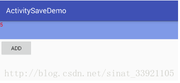
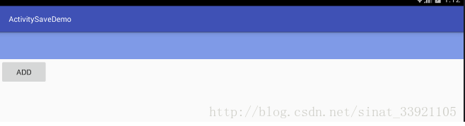
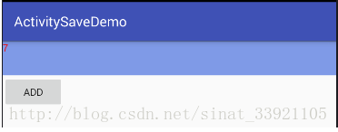

一.有哪些状态是需要保存的
有哪些状态是需要保存的呢？最简单明了的就是对一些数据的保存，比如你正在操作一些数据，当面临突发情况，你的数据还没有操作完，这时候你就需要将数据进行保存，以便我们再次回到这个页面的时候不用重头再来。
二.什么情况下需要Activity状态的保存与恢复
那么在什么情况下需要对Activity的状态进行保存与恢复呢？官方文档的说法是在处理运行时配置变更的时候，来看官方文档介绍的一段话
有些设备配置可能会在运行时发生变化（例如屏幕方向、键盘可用性及语言）。 发生这种变化时，Android 会重启正在运行的 Activity（先后调用 onDestroy() 和 onCreate()）。重启行为旨在通过利用与新设备配置匹配的备用资源自动重新加载您的应用，来帮助它适应新配置。
要妥善处理重启行为，Activity 必须通过常规的Activity 生命周期恢复其以前的状态，在 Activity 生命周期中，Android 会在销毁 Activity 之前调用 onSaveInstanceState()，以便您保存有关应用状态的数据。 然后，您可以在 onCreate() 或 onRestoreInstanceState() 期间恢复 Activity 状态。
这里面提到了各种回调方法，其中也有本文介绍的重点，不急，我们一步步来，首先我总结有如下几种情况是需要对数据进行保存的
- 点击了返回键
- 锁屏
- 点击home键
- 有其他APP进入前台（比如接听电话）
- 启动了新的Activity
- 屏幕方向发生旋转
- APP被杀死
三.状态为什么会丢失
紧接着，我们来说一下为什么状态会丢失，这里面到底发什么了什么操作？这里我们用代码来演示一下，就是一个Activity，我们复写它的onCreat和onDestroy方法，分别打上log，然后启动再点击旋转屏幕（本文主要以屏幕旋转为例）看看这个过程方法是如何执行的。
1 | 11-25 12:51:27.419 4153-4153/com.ithuangqing.activitysavedemo D/mainactivity--vv: onCreate |
我们从log中可知，当应用启动，首先运行onCreat方法，当我们点击旋转屏幕会发现当前的Activity被销毁了，然后又重新执行了onCreat方法，这是怎么回事，Activity发生了什么样的变化呢？我们在log中打印出当前Activity的hashcodekankan。
1 | 11-25 12:57:20.934 4439-4439/com.ithuangqing.activitysavedemo D/mainactivity--vv: onCreatecom.ithuangqing.activitysavedemo.MainActivity@4a79f318 |
原来当点击了屏幕旋转之后，当前Activity会被销毁，然后会重新创建一个新的Activity，如此一来我们在之前Activity的数据如果不保存的话就又可能丢失了。
好了，到了这一步你至少要明白这么一件事，就是当在第二部分中说的几种情况出现时比如屏幕发生旋转，当前的Activity会被销毁而且会重新创建一个全新的Activity。
下面我们举一个数据丢失的例子，让你看的更清楚。首先设置布局，布局很简单，一个文本框，一个按钮，给按钮设置一个点击事件，点击按钮让文本框中的数字从一递增。
1 | protected void onCreate(Bundle savedInstanceState) { |
运行之后点击按钮，如图

现在文本框中的数字是5，接下来我们点击屏幕旋转看看会发生什么，如图

果不其然，数据丢失了。
四.如何保存与恢复
既然数据会丢失，那么我们该如何保存数据，或者如何解决这些问题呢？我们拿屏幕旋转这个变更来说，首先我们知道，如果屏幕发生旋转，当前Activity会被销毁，因此我们可以限定屏幕的方向，这样一来即使我们点击屏幕旋转，屏幕的方向是没有发什么变化的，所以Activity不会被销毁，数据自然不会丢失，另外一种方法就是我们可以自己处理变更，我们可以在当前的Activity的配置文件中添加这么一行代码
1 | android:configChanges="orientation|screenSize|keyboard" |
这句代码的意思就是告诉系统我们自己来处理变更，这两种方法不是今天的主菜，真正的主菜是onSaveInstanceState和onRestoreInstanceState，终于说到我们的重点了，我相信看完本文的介绍，大家会对这个东西有种终于认识的感觉，那就是每次创建Axtivity中自动创建的onCreat方法中的参数。首先我们在我们的Acticiry中复写 onSaveInstanceState 和 onRestoreInstanceState 同时打上log。看一下 输出。
1 | 11-25 13:38:57.383 5242-5242/com.ithuangqing.activitysavedemo D/mainactivity--vv: onCreate |
从log中我们可以看到，当我们点击屏幕旋转之后，在当前Activity被销毁之前会调用onSaveInstanceState，然后销毁当前Activity，创建新的Activity之后会调用onCreat方法之后会紧接着调用onRestoreInstanceState，那么这两个方法有什么用呢？其实也可以猜到，onSaveInstanceState是用来保存我们当前activity中的数据的，而onRestoreInstanceState可以让我们获取之前保存的数据从而在新的activity中进行设置。
那数据以何种形式进行保存呢？我们来看下这两个函数
1 | @Override |
我们发现他们的参数是Bundle，有印象了吧！我们就是通过Bundle来进行数据保存和读取的，大家都知道这是一种键值对的保存与读取方式。
接下来再看一个函数
1 | @Override |
看看onCreat函数的参数，你发现了什么嘛？前面说过我们可以在onRestoreInstanceState中通过Bundle拿到我们之前保存的数据，其实在onCreat中也能达到相同的效果。
下面我们就具体代码演示一遍吧！
首先是在onSaveInstanceState中保存数据
1 | @Override |
紧接着在onRestoreInstanceState对数据进行恢复
1 | @Override |
接下来运行程序

然后我们旋转屏幕
发现数据被成功保留了下来，
到这里我们总结一下这个方法的调用过程，当运行时配置发生变更的时候，程序总的会销毁当前的Activity，然后重新创建一个新的Activity，在这个过程中，销毁当前Activity之前会先调用onSaveInstanceState让我们来保存数据，然后重建Activity在调用onCreat方发之后会调用onRestoreInstanceState让我们来对数据进行恢复，当然也可以在onCret中进行数据恢复，方法原理相同。
五.这个知识点你需要注意的地方
通过以上的讲诉，相信你对Activity状态的保存与恢复已经掌握的差不多了，在这里我再补充几点
关于onSaveInstanceState
这个方法默认情况下会自动保存有关Activity的视图层次结构的状态信息，简单举个例子，我们以系统控件EditText来说，系统默认会保存有关这个控件的一个信息，也就是当你在这个控件中输入内容的时候，即使旋转屏幕内容也不会丢失，因为系统已经默认为其实现了我们说的那两个方法，但是有个前提，这个控件必须设置id，否则数据依旧会丢失，另外如果你重写了onRestoreInstanceState也要保证必须有这行代码
1 | super.onRestoreInstanceState(savedInstanceState); |
关于旋转屏幕无法调用onSaveInstanceState的问题。
出现这种问题你复写的肯定以下方法
1 | public void onSaveInstanceState (Bundle outState, PersistableBundle outPersistentState)； |
改成以下方法即可
1 | public void onSaveInstanceState (Bundle outState)； |
来自博客

...
...